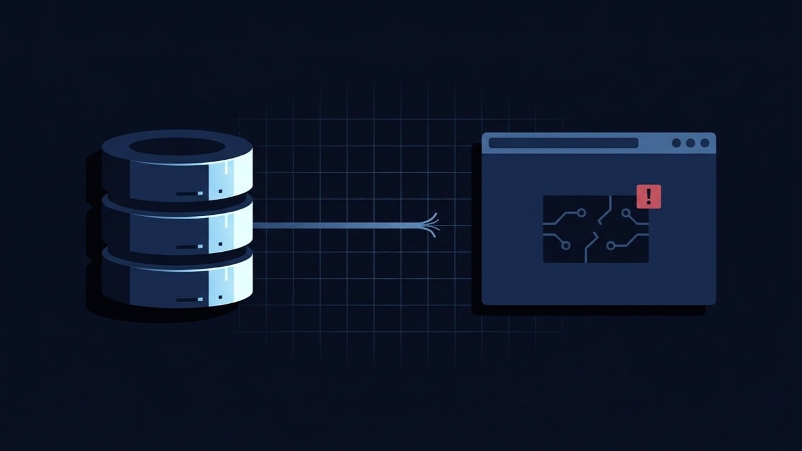

WordPress Showing “Error Establishing a Database Connection”? Here's What's Actually Wrong.
A plain page with a single line of text and nothing else — no header, no styling, sometimes wp-admin down along with it — means WordPress could not reach MySQL at all. That's a different, earlier failure than a plugin conflict or a page-builder glitch, and it usually traces to one of a short list of causes once you know where to look.

What is the problem?
“Error establishing a database connection” is WordPress's own message for one specific failure: it could not open a connection to the MySQL or MariaDB database that holds every post, page, product, setting and user account on your site. WordPress generates this itself, in its core database-handling code, the moment a connection attempt fails — it isn't a plugin error, a theme error, or a hosting error page. It just means the very first thing WordPress needs to do on every single request never succeeded.
Quick answer: this almost always comes down to one of four things — wrong database credentials in wp-config.php, the database server itself being unreachable, too many simultaneous connections hitting your hosting plan's limit, or a database that got moved or renamed without wp-config.php being updated to match.
Because the connection fails before WordPress can query for anything, this affects the entire site at once — the public pages, wp-admin, wp-login.php and the REST API all show the same failure. That total-outage feel is what makes it look worse than it usually is: your content is still sitting in the database exactly as it was, untouched. What's broken is the connection to reach it, not the data itself.
Common symptoms
- A completely plain page with the single line “Error establishing a database connection” and nothing else — no WordPress styling, no header or footer
- wp-admin and wp-login.php show the identical message, not just the public site
- It can be constant (every request fails the same way) or intermittent (works, then fails, then works again) — and which of those two you're seeing is the most useful early clue
- REST API endpoints (
/wp-json/) also fail, since they need the database too - It appeared right after a migration, a host change, a database password reset, or a restore from backup
- Your hosting status page shows everything as operational, because the web server itself is fine — it's specifically the path from PHP to the database that's broken
Why does this happen?
Every WordPress request runs through wp-config.php first, which defines four constants — DB_NAME, DB_USER, DB_PASSWORD and DB_HOST — and hands them to WordPress's database class to open a connection before anything else happens. If any one of those four values is wrong, or if the database server named in DB_HOST can't actually be reached right now, that connection attempt fails and WordPress has no content to serve, because it never got as far as asking for any.
This is also why the error can be intermittent rather than constant. A connection-limit problem isn't a fixed wall — most hosting plans cap the number of simultaneous database connections a site can hold open, and that ceiling only gets hit under certain conditions: a traffic spike, a runaway plugin holding connections open too long, or several visitors landing on a heavy page at once. The error clears once the load passes, but the underlying ceiling is still there waiting to be hit again.
Common technical causes
- Wrong database credentials in wp-config.php — the single most common cause, especially right after a migration, a host change, or a restore where the new database has a different name, username or password than the old one
- The database user's password was changed in cPanel or phpMyAdmin without updating wp-config.php to match — the two systems don't sync automatically
- The database server is down or unreachable — a host-side outage, scheduled maintenance, or the account being resource-suspended
- Too many simultaneous connections, exceeding what your hosting plan allows — often from a traffic spike, a plugin leaking connections, or several heavy cron jobs running at once
- An incorrect DB_HOST value — some hosts require a specific hostname, socket path or non-default port rather than the generic
localhost, especially after moving to a different server - A corrupted wp-config.php file itself, from a bad manual edit — a stray quote or missing semicolon can break the constants before the connection is even attempted
- The database server's disk is full, which can stop MySQL from accepting new connections even though the server process is technically still running
- A migrated database imported under a different name or user than what wp-config.php still points to, common when a backup is restored into a fresh hosting account
How to diagnose it
- Open wp-config.php via FTP or File Manager and note the current
DB_NAME,DB_USER,DB_PASSWORDandDB_HOSTvalues. - Compare them against your actual database in your hosting panel's MySQL Databases (or equivalent) page — the database name and username there need to match wp-config.php exactly.
- Try connecting directly with the same credentials through phpMyAdmin or a command-line MySQL client. If that connection also fails, the problem is server-side, not something in your WordPress files.
- Check whether the failure is constant or intermittent. Constant almost always means credentials or DB_HOST are wrong; intermittent points toward a connection limit or a server-side resource issue instead.
- Check your host's status page and current database connection count against your plan's stated limit, if your hosting panel shows one.
- If you migrated recently, confirm DB_HOST actually points at the new server, not a leftover value from the old one.
How to fix it, step by step
- Correct the credentials in wp-config.php if they don't match your actual database — update
DB_NAME,DB_USER,DB_PASSWORDandDB_HOSTto the real, current values. - If you reset the database password anywhere — cPanel, phpMyAdmin, your host's dashboard — update wp-config.php to the new password immediately; the mismatch is the entire cause in this case.
- If the database server is down, this is on your host to resolve — open a support ticket with them; there's nothing to fix on the WordPress side while their database service itself is unreachable.
- If it's a connection-limit issue, identify what's consuming connections (a runaway cron job, a plugin that isn't closing connections, genuine traffic growth) and either fix that directly or ask your host to raise the limit if the traffic is legitimate.
- If a migration left mismatched credentials, update wp-config.php to the database name, user and password the new host actually assigned — these are frequently auto-generated and different from the originals.
- Restore wp-config.php from backup if a manual edit corrupted the file itself, rather than trying to hand-fix broken syntax under pressure.
- Re-test the site once changed, checking both the public pages and wp-admin, since a fix that only addresses the front end isn't actually complete.
When this needs professional help
A wrong password in wp-config.php is a two-minute fix once you know that's the cause. It's worth bringing in a developer when:
- You've confirmed the credentials are correct and the direct database connection test still fails, meaning it's a server-side issue you can't resolve yourself
- The error is intermittent and tied to a connection limit, which needs the actual root cause identified rather than repeated support tickets asking your host to "just fix it"
- You're not comfortable editing wp-config.php over FTP, or unsure which values are actually correct after a migration
- The database itself may need a table repair, which carries real risk of data loss if done incorrectly
How I can help
A database connection error looks like the whole site has vanished, which is exactly why it's stressful — but in the overwhelming majority of cases the content is completely intact and the fix is narrow: correct credentials, a resolved connection limit, or a host-side issue chased down properly. Over eleven years of freelance WordPress work I've traced this back to its actual cause more times than I can count, and I fix the specific thing that's wrong rather than reaching for a full restore when one wp-config.php value or one connection ceiling is the real story.